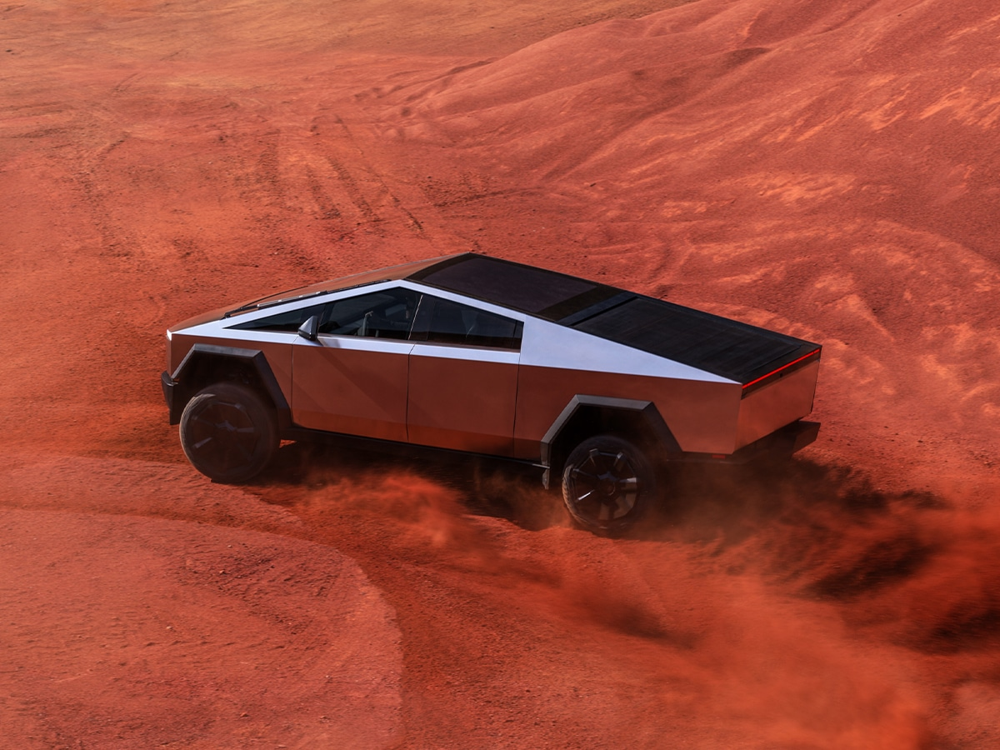

El futuro eléctrico de la automoción
 23 de noviembre de 2024
Juan Pérez
¿Tiene sentido una camioneta eléctrica de 3 toneladas con un diseño exageradamente futurista y prestaciones de superdeportivo? Al parecer, para Elon Musk sí. Este es, a raíz de una conversación familiar, un capricho personal que ha llegado a materializar, pese al gran desafío que ha supuesto (y seguirá así) en materia comercial e industrial. Hace poco, Diariomotor tuvo una primera toma de contacto en España con el monstruoso Cybertruck de Tesla y he aquí un vídeo en el que nuestro compañero Juanma lo analiza a fondo.
Tesla Cybertruck, el raro e interesante resultado de 5 años de pensamiento disruptivo
El Tesla Cybertruck es un pickup con casi 5,7 m de longitud y más de 2,4 anchura con los retrovisores desplegados. Su altura en su posición más elevada (gracias a un equipo de suspensión neumática) es de 2 m exactos. Con estas dimensiones y un aspecto lleno de aristas vivas, además de materiales extremos y extraños como el acero inoxidable que se usa para las piezas de la carrocería, lo hace difícilmente homologable y vendible en nuestras latitudes, donde quizá no llegue jamás.
Presentado en 2019 como un vehículo que rompería con lo establecido en el sector del automóvil mundial (no sólo americano), lo cierto es que impone tanto por apariencia como por tecnología. Sencillamente, es un producto espectacular que, más allá de su concepto casi demencial, bien puede entenderse como un escaparate técnico donde la innovación es capital. A falta de comprobar su verdadera robustez, demuestra un alto grado de funcionalidad para los estándares estadounidenses a los que está dirigido
¿Una revolución automovilística? Cuanto menos, una importante redefinición de esta
Al margen de la complejidad de su proceso productivo, fruto de tanta invención (como su inmenso parabrisas), sería muy injusto menospreciar el trabajo que hay detrás de la Cybertruck y todo lo que ofrece sin dejar de ser una camioneta con excelentes cotas de todoterreno y tremendas capacidades de carga y arrastre. Es el caso de 2 o 3 motores con potencias superiores a los 800 CV y aceleraciones de 0 a 100 km/h en menos de 3 s o de una batería con autonomía de casi 550 km por menos de 100.000 $.
Se trata de un vehículo hecho para llamar la atención que transciende su funcionalidad para convertirse en una herramienta mercadotécnica que fortalece el posicionamiento de Tesla, aún más si cabe, en la mente del consumidor. Dan igual los sobrecostes sobre las tarifas anunciadas, los retrasos en su fabricación, su falta de seguridad o la evidente carencia de sentido ecológico en un pickup eléctrico. Es un producto sin precedentes que obliga a replantear sus enfoques a la competencia y que, guste o no, ya es historia